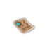
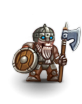
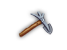
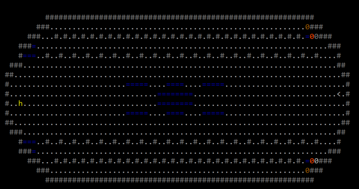
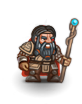
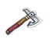

Improved ADOM Guidebook
Previous - TOC - Next
Map - Fortress 1 - Fortress 2 - Fortress 3 - Fortress 4 -
Rolf - Rolf quest
Rolf's Fortress
The Rolf's Fortress doesn't appear on the wilderness map initialy. To find it, the PC must assemble and read the Antediluvian Dwarven Map.
2.27.1 Antediluvian Dwarven Map ?

There are 6 Antediluvian Dwarven Map Fragments scattered across the map. Reading one when the PC possesses all 6 fragments allows the PC to combine them into a map to Rolf's Fortress.
The 6 fragments can be found in the following locations:
- ID fragment
The location of this fragment is revealed by talking to the Drunken Dwarf NPC in Lawenilothehl (section 1.3.6) several times. He will eventually require you to
guess the ID level this fragment is located on; the level number is an anagram of the Drunken Dwarf's name. Once this riddle is successfully answered, a map fragment can be found on the specified
ID level. This map fragment is generated on a trap, but it will automatically jump into the inventory upon leaving its ID level.
- Antediluvian shop fragment
A map fragment can be found in a scroll shop in the Antediluvian Dungeon. This fragment will often be sold for an exorbitant price.
- Griff fragment
A map fragment can be found by digging up Griff's remains (section 2.7).
- Gladiator fragment
The Dwarven Gladiator NPC in the Arena (section 3.2.8) will give the PC a map fragment if they chat with him while wielding Rolf's Savior and Rolf's Companion.
Rolf's Savior can be guaranteed by talking with Thrundarr about "Rolf" before receiving his 4th quest reward while lawful. The gladiator will not give the fragment to Orcs and Trolls, however.
He will drop the map fragment when he dies, but killing him forfeits the chance of entering Rolf's throne room, as the gladiator counts as a dwarf. So Trolls and Orcs will need a strong companion
to kill the gladiator for them, or beat his health down and let the companion finish him off.
- Sinister fragment
First, talk with Thrundarr about "Rolf". Then, talk with the Grizzled Dwarven Veteran NPC in the HMV. This will allow the PC to find the Eerie Glade to the north of the Mad Minstrel's hut.
(section 2.24). An Ancient Dwarven Key can be found by digging up the white grave there. This key can then be used to unlock the portal at the bottom of the
Sinister Dungeon. Alternatively the PC can use the Silver Key. The portal leads to a four level dungeon, which features antediluvian enemies. The second and third levels are shifting dungeons,
and the map fragment can be found lying on a trap on the fourth level.
- Random fragment
One map fragment can be dropped by a random monster.
Once the PC reads the Antediluvian Dwarven Map, Rolf's Fortress can be found in the mountains directly east of Terinyo. Once read, it can safely be sold or given to the Demented Ratling.
The fortress consists of four levels, with Rolf at the bottom.
---------------------------- antediluvian dwarven map ---------------------------
Weight: 2s
When used in melee combat it grants a +0 bonus to hit and causes 1d1 points of damage.
When used as a missile it grants a +0 bonus to hit and causes 1d1 points of damage.
(reveals location of Rolf's Fortress)
|
2.27.2 Ruined Courtyard
The first level of the fortress has a moat populated by random aquatic monsters. The first proper room contains four pools. To the north is a peaceful Dwarven Guardian
Spirit and piles of bones. To the south is a room full of dwarven ghost warriors who become hostile upon noticing the PC. The dungeon continues east through a
gauntlet of respawning constructs. Most actions taken on the level (e.g. picking up items, using items, breaking walls and doors) will cause angry stone golems
and stone statues to spawn from here. The final chamber to the east has two secret doors. The secret door to the east leads to the artifact Unpick Axe, guarded by
Truesilver Golem. The secret door to the south leads to the rest of the fortress levels. Teleportation is not allowed on this level, although most of the walls are
diggable, with the exception of those around the secret doors.
There is an unusual concentration of lawfully aligned monsters on this level (the dwarven ghost warriors and Truesilver Golem). It is worth noting that killing these
monsters is a chaotic act; in particular, killing the Truesilver Golem could cause a large negative alignment shift. This could be particularly problematic for
Dark Elf/Orc/Troll PCs, who must be lawful in order to receive Rolf's quest.

2.27.2.1 Dwarven ghost warriors G
| Level: 1, DV: 20, PV: 0, Hits: 45, Attacks: 1, Damage: 1d8+9, Speed: 100. |
Dwarven ghost warriors are undead monsters that normally only appear only on this level. As might be obvious, they have aging melee attack and can pass through walls
and doors.
2.27.2.2 Dwarven Guardian Spirit Z

| Level: 1, DV: 12, PV: 25, Hits: 500, Attacks: 2, Damage: 2d9+16, Speed: 100. |
The Dwarven Guardian Spirit is immune to death rays, stunning, blindness, confusion, paralysis, poison, and mindcraft. He drops vigilant truesilver plate mail of protection and
lawful truesilver battle axe of defense when killed.
2.27.2.3 Truesilver Golem Y

| Level: 1, DV: 40, PV: 40, Hits: 200, Attacks: 1, Damage: 6d6+6, Speed: 250. |
The Truesilver Golem guards the Unpick Axe. It does not appear anywhere else, but can be wished for. It is a dangerous opponent with good defense, high speed,
and penetrating melee attack. It is also immune to fire and shock.
2.27.2.4 Unpick Axe (

The Unpick Axe is able to create walls. Using it on an adjacent tile that contains only a single rock will create a wall. It's not possible to
create walls on top of traps, forges, altars, bee hives, ant hills, water, magma, herbs, trees, statues, or pools. It is possible to create wall on top of bridges,
special wilderness terrain, and open doors. Creating a wall with the Unpick Axe will sometimes drain a point of Mana. Digging an unpick-axe-created wall will
produce a normal floor tile (eligible for door/trap creation, herbs, and webbing), regardless of the original terrain of the tile.
------------------------- unpick axe (+3, 3d6+3) {To+10} ------------------------
Weight: 75s
When used in melee combat it grants a +3 bonus to hit and causes 3d6+3 points of damage.
When used as a missile it grants a +0 bonus to hit and causes 3d6+3 points of damage.
It modifies your toughness attribute by +10.
It grants resistance to poison.
It grants immunity to fire.
It grants resistance to confusion attacks.
It grants immunity to disease.
(also creates walls from rocks)
|
2.27.3 Dungeon
The second level of the fortress is a dungeon level with a normal random layout. It features antediluvian enemies. Teleportation is allowed on this level.
2.27.4 Mighty Hall
The third level of the fortress has a large, open layout featuring many monsters. Most of the monsters are initially peaceful, but will become hostile when the PC
ascends from the final level. A room full of antediluvian alcohol is hidden behind a secret door in the northeast of the level. A pool and the stairs down are on
the west side of the level. Teleportation is not allowed on this level. If the PC has killed ANY living dwarven monster types (eg. Kherab) apart from dwarven
chaos knights, they will not be allowed to descend to the final level.

2.27.5 Throne Room
The final level of the fortress is a single, huge room. There are six pools on the east end, and Rolf is initially found on the west end. Teleportation is not allowed
on this level.

2.27.5.1 Rolf, the antediluvian dwarf h

| Level: 1, DV: 80, PV: 60, Hits: 3000, Attacks: 4, Damage: 6d6+18, Speed: 130. |
Rolf is found at the bottom of his fortress. Giving him Rolf's Companion and Rolf's Savior allows the PC to undertake his quest to kill Katharamandus. He will attack
non-lawful Dark Elves, Orcs, Trolls, and Chaos Knights of any alignment when chatted with. As an opponent, Rolf has penetrating, slowing attack, can disarm in melee,
and is immune to all elements.
2.27.5.2 Rolf quest
 Rolf will assign a quest if you chat with him after giving him his axe and shield, provided the PC has not killed a dwarf except dwarven chaos knights, is not Chaos Knight,
or non-lawful Troll, Orc, or Dark Elf. He asks the PC to slay the Stone Dragon King and return with its heart (the stone heart Bergbringer). After receiving this quest,
the Stone Dragon Caves can be found in the mountains to the west of the Pyramid (section 2.28). The heart will be dropped by the boss of the
caves, Katharamandus, the stone dragon king. Upon successful delivery of the heart, he rewards the PC with the Gleaming Dwarven Rune Axe and Gleaming Dwarven Shield,
as well as +2 Strength, +6 Toughness, and +6 Willpower.
Rolf will assign a quest if you chat with him after giving him his axe and shield, provided the PC has not killed a dwarf except dwarven chaos knights, is not Chaos Knight,
or non-lawful Troll, Orc, or Dark Elf. He asks the PC to slay the Stone Dragon King and return with its heart (the stone heart Bergbringer). After receiving this quest,
the Stone Dragon Caves can be found in the mountains to the west of the Pyramid (section 2.28). The heart will be dropped by the boss of the
caves, Katharamandus, the stone dragon king. Upon successful delivery of the heart, he rewards the PC with the Gleaming Dwarven Rune Axe and Gleaming Dwarven Shield,
as well as +2 Strength, +6 Toughness, and +6 Willpower.
------------- gleaming dwarven rune axe (+6, 5d8+12) [+7, +7] {To+6} ------------
Weight: 10s
When wielded it modifies DV by +7 and PV by +7.
When used in melee combat it grants a +6 bonus to hit and causes 5d8+12 points of damage.
When used as a missile it grants a +6 bonus to hit and causes 5d10+12 points of damage.
It modifies your toughness attribute by +6.
This weapon returns when thrown.
It grants resistance to fire.
|
--------------------- gleaming dwarven shield (+4) [+15, +10] ------------------
Weight: 12s
When used in melee combat it grants a +4 bonus to hit and causes 2d6 points of damage.
When used as a missile it grants a +0 bonus to hit and causes 2d6 points of damage.
It grants resistance to fire.
It grants resistance to poison.
It grants resistance to cold.
|
Alternatively, the heart can be corrupted by using it while in the possession of Chaos
Orb of Elemental Fire. This forfeits the rewards from Rolf, but opens up another quest
line – the Volcano quest (section 2.29).
Updated October 5th, 2019